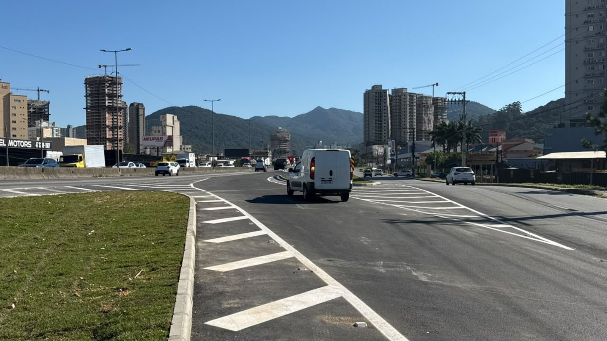
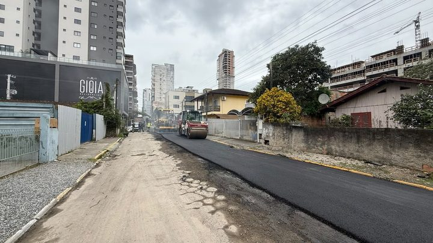

Itapema · Infraestrutura
Itapema · InfraestruturaA alça da BR-101 em Itapema ganhou mais 90 dias de contrato quatro dias depois do anúncio de reta final, e o novo prazo vai até 19 de dezembro
O aditivo de 14 de setembro, e a ciclovia que apareceu no papel.
A alça de incorporação à BR-101 no km 146+315, sentido Sul, foi liberada para o tráfego nesta sexta-feira, 25, com a retirada da mureta que separava a marginal da rodovia. O anúncio de 24 de abril falava em cinco meses, conta que fechava em 24 de setembro, e a abertura veio um dia depois. Só que o 2º termo aditivo, assinado em 14 de setembro, tinha esticado o contrato até 19 de dezembro: a obra abriu 85 dias antes desse prazo. Quem ganha o acesso são Casa Branca, Alto São Bento e Sertãozinho.
Em 30 segundos · Modo de Leitura, formato original Santa Informa
A alça nova da BR-101 em Itapema abriu.
Fica no km 146+315, sentido Sul.
A liberação foi nesta sexta-feira, 25 de setembro.
Tiraram a mureta que separava a marginal da rodovia.
Quem passa ali já pode usar.
Atende Casa Branca, Alto São Bento e Sertãozinho.
Antes esses bairros iam até o Tabuleiro para pegar a BR no sentido Sul.
A Prefeitura anunciou a obra em 24 de abril.
O prazo divulgado foi de cinco meses.
Essa conta fechava em 24 de setembro.
Abriu no dia 25, um dia depois.
O contrato conta outra história.
Em 14 de setembro saiu o 2º aditivo.
Ele esticou o prazo até 19 de dezembro.
A alça abriu 85 dias antes disso.
O contrato é o nº 188/2025, com a empreiteira BALTT.
Foi assinado em 28 de novembro de 2025.
Da assinatura até a abertura deram 301 dias.
O valor é de R$ 1.024.500.
A nota de hoje traz esse número redondo pela primeira vez.
Antes a Prefeitura falava em "cerca de R$ 1 milhão".
Parte do dinheiro é emenda parlamentar.
O valor da emenda saiu em branco na nota de hoje.
O mesmo processo tem 1,1 km de ciclovia na marginal leste.
Ela está noutro contrato, o 187/2025.
Esse contrato vence em 13 de outubro.
A nota da alça não fala da ciclovia.
As contas de dias são nossas.
InfraestruturaPublicada em Redação Santa Informa

A Prefeitura de Itapema liberou ao tráfego, nesta sexta-feira, 25 de setembro, a alça de incorporação à BR-101 no km 146+315, sentido Sul. A mureta que separava a marginal da rodovia foi retirada e o carro já passa. Pela conta do anúncio de 24 de abril, que falava em cinco meses, o prazo fechava em 24 de setembro, então a abertura veio um dia depois. Pela conta do contrato, a diferença é outra: o 2º termo aditivo assinado em 14 de setembro levou o prazo até 19 de dezembro, e a alça abriu 85 dias antes disso. As duas contas são nossas, feitas sobre datas que a própria Prefeitura publicou.
O acesso atende principalmente Casa Branca, Alto São Bento e Sertãozinho. Quem sai desses bairros e quer pegar a BR-101 no sentido Sul precisava seguir até o Tabuleiro para entrar na rodovia. Agora entra ali mesmo, pela marginal. A Prefeitura aponta ainda alívio nas passagens inferiores da região, que hoje concentram o fluxo de quem cruza a rodovia.
Esta é a terceira vez que abrimos os papéis dessa alça, e agora dá para fechar a linha. O contrato é o nº 188/2025, com a BALTT Empreiteira Transportes e Terraplenagem Ltda, assinado em 28 de novembro de 2025 com vigência de 148 dias. Da assinatura até a abertura passaram 301 dias. No meio vieram dois aditivos, um de 150 dias em abril e um de 90 dias em setembro, que somam 240 dias a mais. Em 10 de setembro a Prefeitura anunciou reta final, com o asfalto pronto e faltando pintura, placas e liberação da concessionária. Quinze dias depois, abriu.
A nota desta sexta traz o investimento contratado em R$ 1.024.500. É a primeira vez que o número sai fechado num anúncio da obra: em abril a Prefeitura falava em cerca de R$ 1 milhão. O valor bate exatamente com o contrato 188/2025 que lemos no Diário Oficial. A mesma nota diz que parte do dinheiro é recurso do Governo do Estado viabilizado por emenda parlamentar, mas o valor da emenda saiu em branco no texto publicado. Em abril, a Prefeitura informou R$ 800 mil de emenda do deputado Emerson Stein.
O resumo de 30 segundos está no topo e a versão completa é o texto acima. Aqui ficam as três leituras da casa sobre o mesmo assunto.
Clara, a otimista
Obra de rodovia federal que abre um dia depois do prazo que foi anunciado ao morador é coisa rara, e merece ser dita em voz alta. Em abril falaram cinco meses, e em cinco meses e um dia a mureta caiu. Quem mora no Alto São Bento, na Casa Branca ou no Sertãozinho acordou hoje com um caminho a menos para fazer.
E o que entregaram não é só asfalto. Tem pista de aceleração, drenagem, defensa metálica e a sinalização pintada, tudo dentro das exigências da concessionária e da ANTT. Entrar numa BR pela direita, com pista para ganhar velocidade, é o jeito seguro de fazer. Essa parte custa caro e não aparece na foto, mas é ela que evita susto na hora de entrar na rodovia.
Seu Prudêncio, o criterioso
Merece atenção a diferença entre as duas contas de prazo. Pela data do anúncio, um dia. Pelo contrato, a obra abriu 85 dias antes de um prazo que tinha acabado de ser esticado em 90 dias, onze dias antes da abertura. Não é contradição, os dois números são verdadeiros, mas mostram que aditivo de contrato e cronograma de obra caminham em ritmos diferentes, e que o aditivo de 14 de setembro provavelmente foi margem de segurança, não previsão real.
Vale acompanhar três pontos concretos. O primeiro é a ciclovia de 1,1 km da marginal leste, que está na mesma licitação, num contrato que vence em 13 de outubro, e que não apareceu em nenhum dos quatro anúncios da obra. O segundo é o que ainda resta executar na alça, já que o contrato segue valendo até dezembro com o trânsito liberado. O terceiro é o valor da emenda parlamentar, que saiu com o campo vazio na nota desta sexta.
Uma sugestão útil, e barata: publicar uma nota de encerramento quando a obra for recebida, com a extensão em metros, o valor pago e a data do recebimento definitivo. Os dados já existem no processo. Dito isso, é preciso registrar o que está certo, e é bastante. A obra foi entregue dentro do prazo prometido ao morador, com pista de aceleração e sinalização feitas segundo o critério da concessionária, e o acesso resolve um problema real de quem cruzava meia cidade para entrar na rodovia. Isso é obra que dá certo, e é justo dizer.
Caco, o sarcástico
Em 10 de setembro, reta final. Em 14 de setembro, mais 90 dias de contrato. Em 25 de setembro, aberta. Ou seja: pediram prorrogação até dezembro e entregaram onze dias depois. É o equivalente burocrático de avisar que vai chegar atrasado e tocar a campainha antes de desligar o telefone.
Acompanhei essa alça desde o mato, passando pelo asfalto sem tinta e pela mureta que ninguém tirava. Hoje tem zebrado pintado no chão. Eu que já fiz piada com a lata de tinta preciso admitir: compraram a tinta.
Falta a ciclovia de 1,1 km que ninguém menciona e que vence em 13 de outubro. Mas vou reclamar de quê. O morador do Sertãozinho passou meses dando a volta pelo Tabuleiro e hoje entra na BR ali mesmo. Demorou 301 dias de contrato, tá lento, mas é progresso.
Fontes: a liberação ao tráfego nesta sexta-feira, 25 de setembro, a retirada da mureta, a localização no km 146+315 sentido Sul, os bairros Casa Branca, Alto São Bento e Sertãozinho, o desvio anterior pelo Tabuleiro, o início em abril, o escopo com acesso pela marginal, pista de aceleração, drenagem pluvial, pavimentação, sinalização viária, defensa metálica e recomposição vegetal, as exigências da concessionária Autopista Litoral Sul e da ANTT, o investimento contratado de R$ 1.024.500 e a executora BALTT estão na notícia publicada pela Prefeitura de Itapema em 25 de setembro de 2026, de onde também saiu a foto desta matéria. O campo do valor da emenda aparece em branco nessa mesma nota, o que conferimos na página aberta. O prazo de cinco meses, a data de 24 de abril e os R$ 800 mil de emenda do deputado Emerson Stein estão no anúncio de início da obra. Os 90 dias do 2º termo aditivo, o novo prazo de 19 de dezembro de 2026 e a assinatura de 14 de setembro estão no extrato do 2º termo aditivo ao contrato nº 188/2025, publicado no Diário Oficial dos Municípios de Santa Catarina. O valor de R$ 1.024.500,00, a vigência original e a assinatura de 28 de novembro de 2025 estão no extrato do contrato nº 188/2025, e a ciclovia da marginal leste, o contrato nº 187/2025 com a FJ Construtora e o prazo de 13 de outubro de 2026 estão nos extratos que reunimos em nossa matéria de 15 de setembro. As contas de 1 dia, 85 dias, 301 dias, 240 dias e 1,1 km são nossas, feitas sobre as datas e os marcos desses documentos. Nossa cobertura anterior está em O asfalto da alça nova da BR-101 está pronto.
Itapema · InfraestruturaO aditivo de 14 de setembro, e a ciclovia que apareceu no papel.
 Itapema · Infraestrutura
Itapema · InfraestruturaA reta final de 10 de setembro, quinze dias antes da abertura.

Itapema · InfraestruturaOutra frente de asfalto da cidade, e outra conta de prazo.